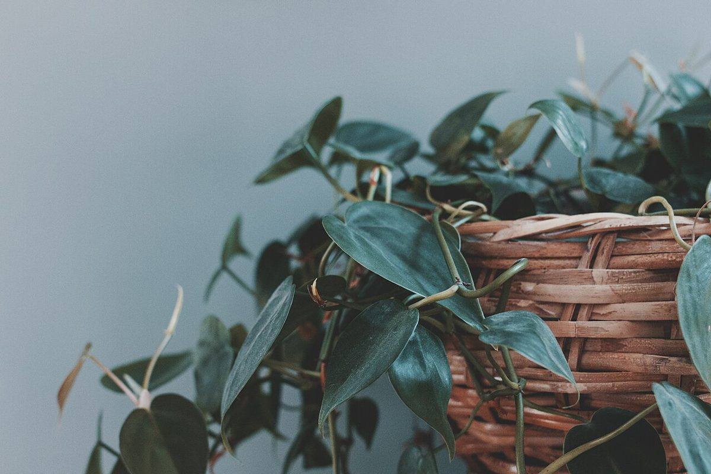

25%
店のこと
店のこと
お店について確認できているのは、所在地・電話番号・Instagramのアカウントです。
「想像してみる」部分は、制作側が想像して書いたものです。お店の実際の様子・考え・メニューとは関係ありません。
確認できていること
- 店名は「PLATTO FAVORI」、業種はカフェ
- 所在地は大阪府枚方市岡本町７−１(〒573-0031)
- 電話番号は072-300-2078
- Instagramは @plattofavori
- 営業時間・定休日・メニュー・価格・ご予約・駐車場は準備中

想像してみる
「お気に入り」という言葉から
由来は分かりません。制作側は、誰かの「お気に入り」がひとつ見つかる場所かもしれない、と想像しました。たとえば、気に入ったカップや、ふと目に留まった一皿。そんなものを思い浮かべています(実際のお店の姿ではありません)。

